AI 创作全能课 · 第十一版
先看节奏，再决定正式拍法
60 秒静帧动态分镜：新分镜图＋镜内动作推进＋《追逐变奏》＋临时对白与英文演唱。图片用于预演，未生成新的正式视频片段。结尾仅保留你的镜像实拍前两句。
00:00:00 / 01:00:00
点击播放，或点击下方每段时间跳转。
看小样时：镜号不变、标有“动作帧推进”，表示同一个正式镜头内的动作过程；不是又加了一刀。背影快切才按拍点硬切。画面时间按 30 帧/秒落实，切点取最接近的整帧。真实的身体运动、嘴型和相机 180° 环绕仍需正式视频验证。
后段卡点密度
41.94—42.88 秒先停两拍，随后从两拍一换 → 一拍一换 → 半拍一换 → 四分之一拍一换。下方每块均可点击。
英文演唱与声音说明
26.92—30.67 秒：Dream it up, let AI take flight.
30.67—34.42 秒：A whole new world, we bring to life.
每句八拍，AI 拆为两个音节。导唱已按配乐调整音高、逐句调整时长；这是临时歌声，不代表你的最终音色。两次未唱对歌词的结果未采用。
配乐复用现有《追逐变奏》。对白与演唱时让出音量，51.30 秒之后收尾；本次没有后配动作音效。结尾使用实拍原声。自动转写及音频类型检查不代替你对唱腔和混音的试听判断。
这一轮已修正和仍需正式视频验证的地方
修正了开场监视器朝向、巨杯和杯柄的连续性、误出的正面换装图、课堂环绕背景不变化的问题；快切背影用裁切统一头顶和后颈位置。最后一张正面静帧直接使用实拍首帧接入原片。
四宫格每张为 2048×1152，拆出的单幅约 1024×576；小样以 1280×720 输出，便于查看时间字标，不等于单张图有 2K 分辨率。杯子结构、古装与舞台灯位等跨场细节仍是分镜示意，尚不能据此声称正式运动衔接已验证。
本次预算上限600积分；前后余额差522积分，逐项真实账单尚未取得，余额差仅作预算核对。正式视频没有继续生成。
从上到下逐段对照
01开口就冲，指出产品问题
为什么拍这一镜开场立即进入工作冲突，让观众知道你在嫌什么。
动作内容你眉头紧、身体前倾，话直接甩出来；导演已经很烦。两人视线落在屏幕，不隔着监视器面对面站。现场有无影布、产品台、摄影机、灯架和黑旗，无女演员。
如何衔接语速快、语气冲，尾音不拖；导演紧接着顶回来，不留礼貌停顿。
音乐与节奏C曲原有节奏从开头推进，配乐给快对白留空间。人物情绪一开始就高，不能照上一版演成温和讨论。
两人后侧约30度中景：黄白左、导演右，并肩看同一台小监视器。
服装：实拍原款灰色卫衣；和导演并肩站在小监视器同一侧。
画面证明产品确实不突出
为什么拍这一镜让观众看见“产品看不清”的依据，同时不断开争吵。
动作内容屏内橙色广告布景中，白色咖啡杯显得过小，被周围道具抢走注意力。导演在画外继续说。
对白 / 演唱导演（画外，整句前半）：“改了 800 版了，”
如何衔接导演的整句“改了 800 版了，你来拍！”一口气说完，声音跨过切镜；不是两次发言。
音乐与节奏只为提供画面证据切这一刀；对白不断，不强行把“800版”说成卡拍口号。
顺两人视线插入监视器正面近景，保留边框；实体屏宽约38厘米。
服装：实拍原款灰色卫衣；和导演并肩站在小监视器同一侧。
为什么拍这一镜看清“你来拍”的冲劲，以及黄白马上接话的状态。
动作内容导演仍朝屏幕，扭头瞥你一下，手掌向监视器一甩，语气硬；你立刻伸出右手准备比划。
如何衔接两人针锋相对。你不解释、不道歉，也不额外补一句“我来就我来”。
音乐与节奏保持紧凑抢话感；手势服务情绪，先保证对白听清，不逐字切镜。
回同一后侧双人中景，监视器仍在两人前方；不跨轴。
服装：实拍原款灰色卫衣；和导演并肩站在小监视器同一侧。
比划“大一点”时直接被吸住
为什么拍这一镜把你的具体指令、手势和穿越触发放在同一个动作里。
动作内容你冲着屏幕说话，右手拇指和食指张开，比划杯子放大。手势还没做完，指尖前方的屏幕就起涟漪，右臂猛地被扯向屏内，身体失衡；不是另伸手触屏，更不是想按停。
如何衔接说到“大”附近张开手，动作当中立即吸入；下一时间段是这个镜头的继续，不重新起一个动作。
音乐与节奏台词快而冲；张手到失衡可落在约4.66／5.00秒附近的候选节拍，不为卡点把手举着等。
侧后方中景同时容纳你、张开的右手和小监视器。
服装：实拍原款灰色卫衣；和导演并肩站在小监视器同一侧。
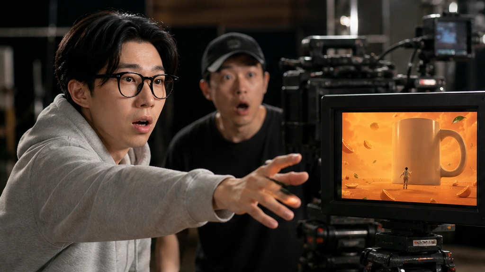
1 / 2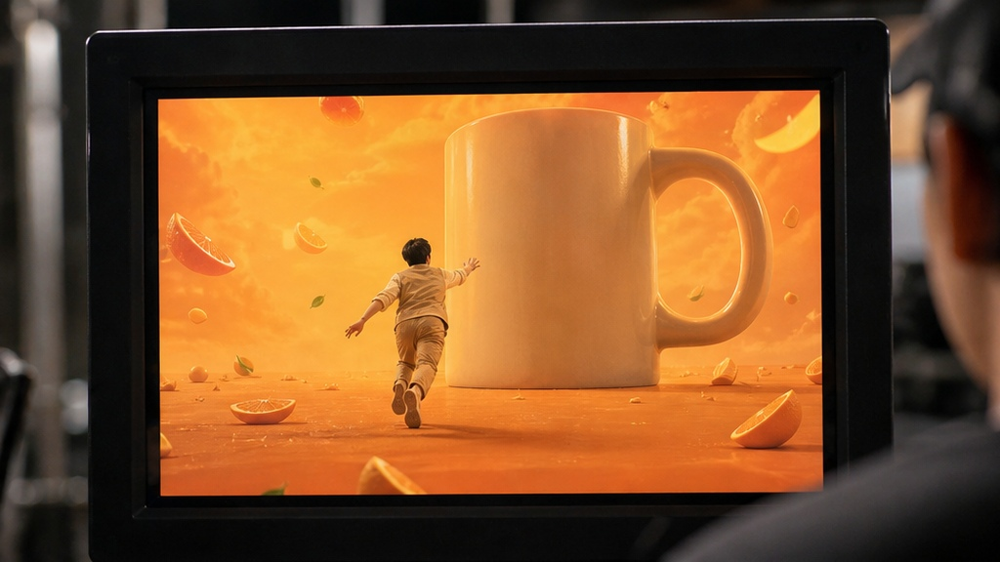
2 / 2为什么拍这一镜完整交代被吸入监视器，而非凭空换场。
动作内容你被刚才比划的那只手牵进去，踉跄失衡后离开地面。实体监视器始终小尺寸；跨屏遮挡后才切换世界与服装。
如何衔接“也不用这么大吧”还不能说，必须等你落地、真正看见巨杯才说。
音乐与节奏约7秒的音乐展开接落地和巨杯揭晓；穿越动作连续推进，不拉成两秒以上悬空慢动作。
延续上一镜，沿被拉走的右臂推进，跟随身体缩入屏内；黑边框掠过镜头。
服装：实拍原款灰色卫衣；和导演并肩站在小监视器同一侧。 → 米白衬衫＋浅卡其马甲（候选）。
落地呆住，才意识到“大过头”
1 / 3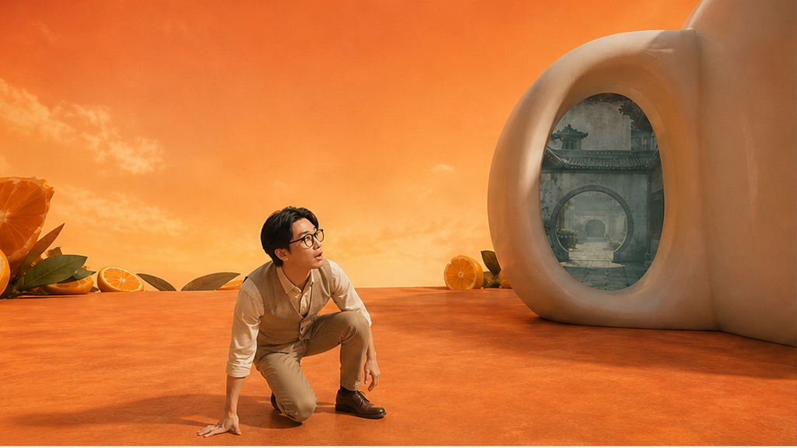
2 / 3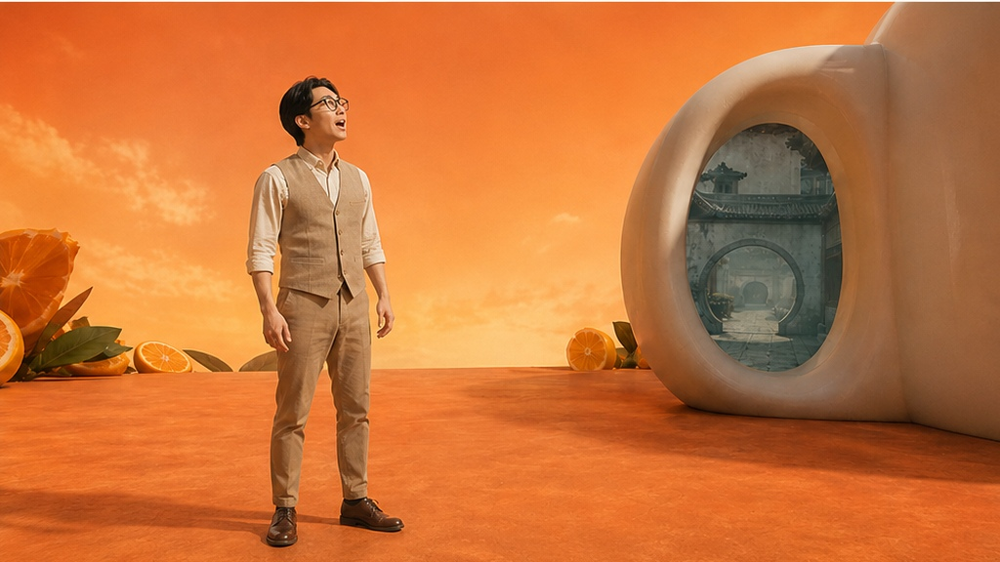
3 / 3 为什么拍这一镜兑现上一句“大点儿”的反差，并让观众看清你的震惊和巨杯尺度。
动作内容你落地缓冲，站起环顾，视线慢慢抬到巨杯顶部，整个人呆半拍。刚才的冲劲一下没了，声音轻下来，说完仍愣着。背景明亮橙色，浮动橙片与绿叶，不插独立脸部特写。
如何衔接这句与片场的高声快语形成反差。话刚落，地面开始出现迅速扩大的阴影，把注意力引向上方。
音乐与节奏音乐在此展开，镜头揭晓巨大环境；表演短暂收一下形成反差。对白只需局部让出空间，不把整首音乐重新停掉。
一个连续中全景接落地，随你站起抬高并后退，露出身后唯一一只巨大白杯；脸仍足够看清表情。
服装：米白衬衫＋浅卡其马甲，暖色轻便造型；候选。
巨型柠檬坠地，危险与出口同框
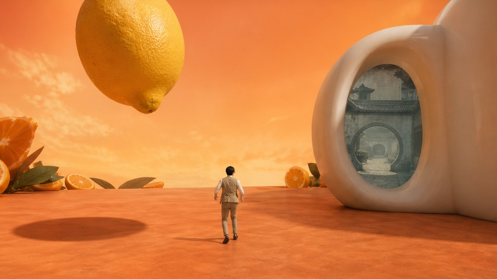
1 / 2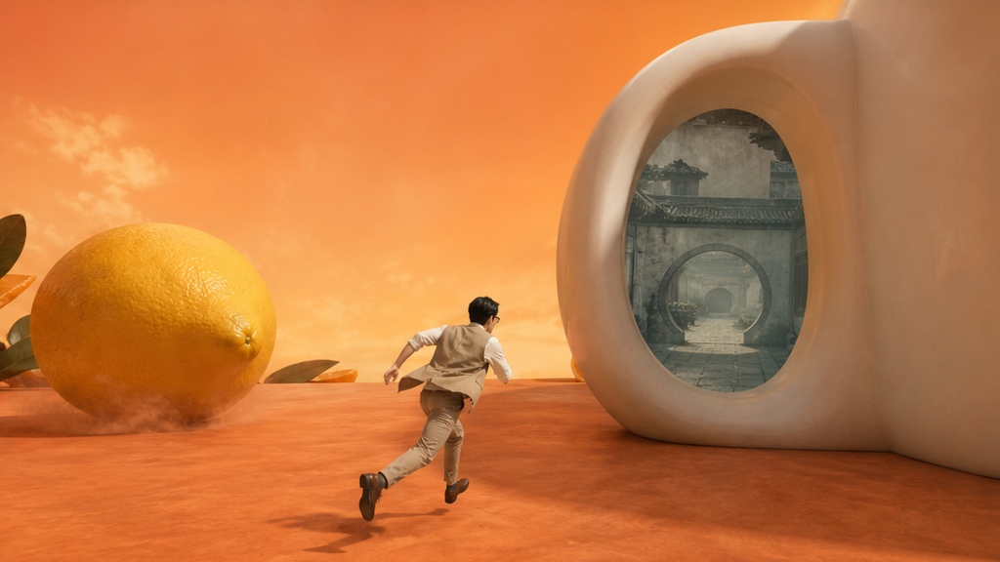
2 / 2为什么拍这一镜明确你为什么跑、危机从哪里来、能逃向哪里。
动作内容一颗比人还大的整颗柠檬从左后方上空坠下，约11.33秒砸地弹一下，沿微斜的地面朝你滚来。你本能侧闪，立刻朝已看得见的右前方杯柄出口跑。孔内能见古代庭院。
对白 / 演唱无对白；原生坠落风声、落地闷响、滚动声与惊喘。
如何衔接先坠落、再着地滚动追近；不让柠檬在空中凭空横着滚。杯柄孔能让人钻过，却比柠檬窄，逃跑方向明确。
音乐与节奏柠檬着地和你启动可对约11.33／12.28秒候选拍点；危险出现就跑，不停下来再解释。音效由视频模型原生生成。
沿你的抬头视线切侧后方中广景：上方柠檬、地面阴影、你和右前方杯柄孔同框；不拆成阴影、眼睛、果皮三个特写。
服装：延续本场米白与浅卡其。
被柠檬追着跑进杯柄
1 / 4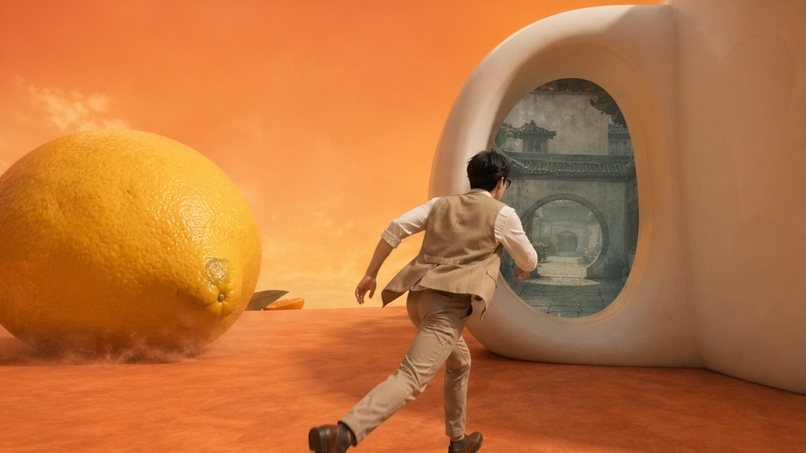
2 / 4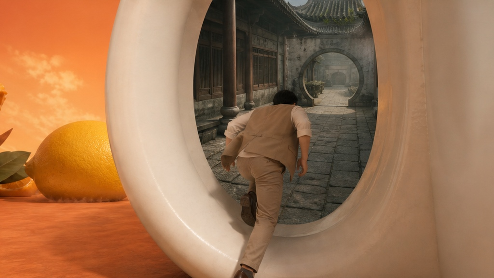
3 / 4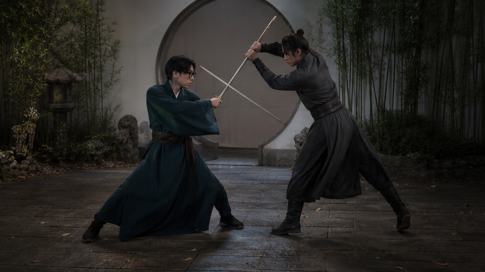
4 / 4 为什么拍这一镜将巨杯危机与下一场古装交战连成同一条逃生路线。
动作内容你全力跑，回瞥一次确认柠檬逼近，立刻收回视线。到杯柄前缩肩钻过去；杯柄近边擦过镜头，遮挡内换成深青古装。出孔后踉跄一步，下一场的剑马上劈来。
如何衔接不再出现咖啡涌流追赶。柠檬留在橙色世界，不跟进古装；保持奔跑方向和身体动势，约17.08秒接第一记格挡。
音乐与节奏音乐持续推动逃跑；不用一脚一切。跨出孔和第一击相接，紧张感不断，穿越不重新开一段音乐。
侧后跟拍，从左后滚来的柠檬始终在追赶方向上，杯柄出口在右前方；接近杯柄后顺势跟到正背面。
服装：米白／浅卡其 → 深青交领长袍（候选）。
1 / 4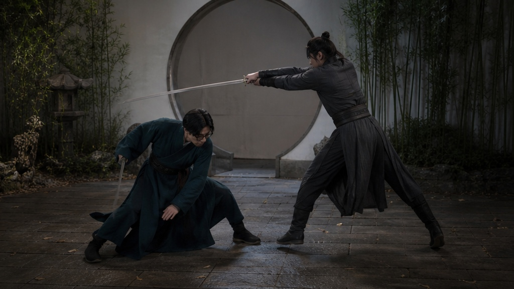
2 / 4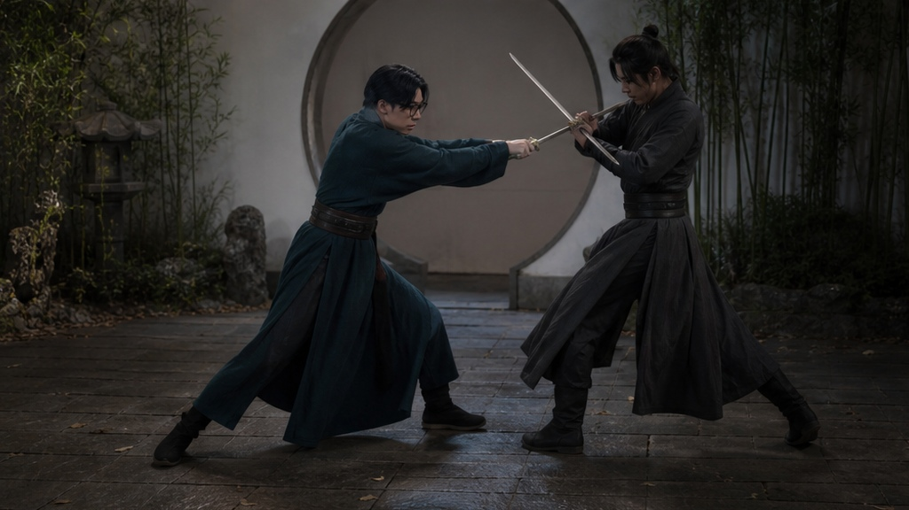
3 / 4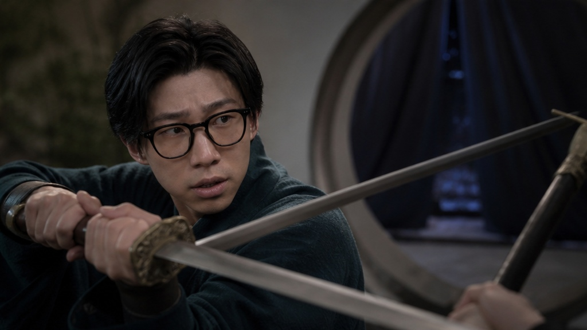
4 / 4 为什么拍这一镜看到对手施压、你勉强招架的完整过程。
动作内容对手斜劈，你拔剑挡住；对手横扫，你低头侧移；你前刺，被拨开并逼退。
音乐与节奏约17.08／18.96／20.36秒分别预定格挡、闪避、反击或受压的动作落点。三次动作在完整中全景里完成，最终按实际动作余量微调。
双人中全景，保留两人脚步和剑路，黄白左、对手右。
服装：深青交领长袍、深棕腰带，右手剑；候选。
看清决定逃跑的一刻
音乐与节奏约21秒力度回落，把“撑不住、发现出口”的短反应放在这里；不拖成静止特写。
压剑近中景，脸、吃力的手臂和侧后方黑帘方向同框。
服装：延续深青古装。
连续完成逃跑与登台
1 / 3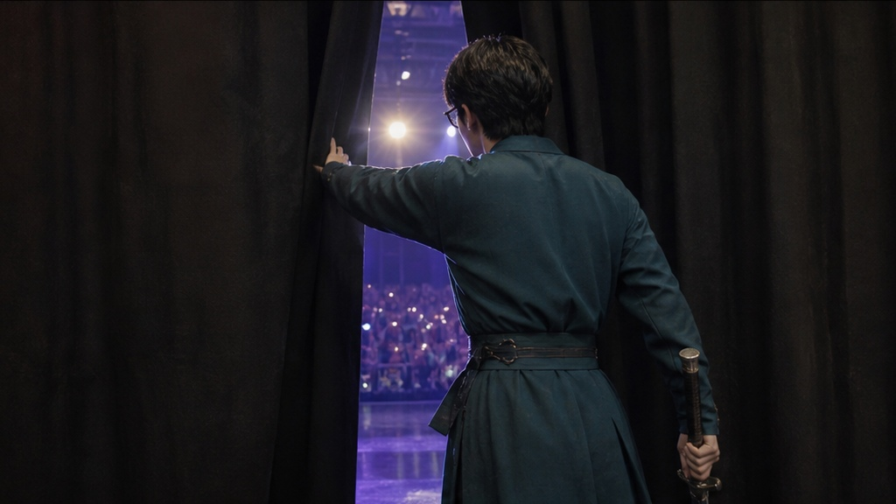
2 / 3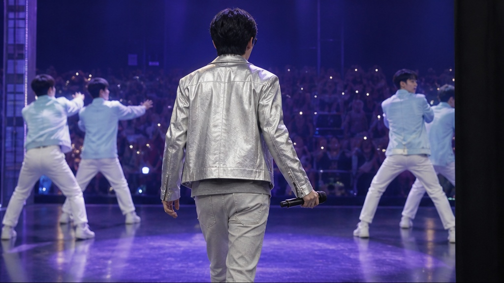
3 / 3 动作内容你后撤脱离对手，左手掀帘、右手剑下垂；遮挡后换成右手话筒和新演出服，跨出的步子直接落在舞台节拍上。
如何衔接原BGM持续，临近跨帘逐步显出舞台鼓点；不重新起一首歌，不等人提醒。
音乐与节奏约22.5秒有音色变化候选，随后力度回升；用连续逃跑、掀帘把能量带向舞台。
侧后跟到正背面，你朝黑帘跑；帘后舞台光漏出来。
服装：深青古装 → 银白短演出外套＋浅灰内搭；候选，不用黑夹克。
1 / 3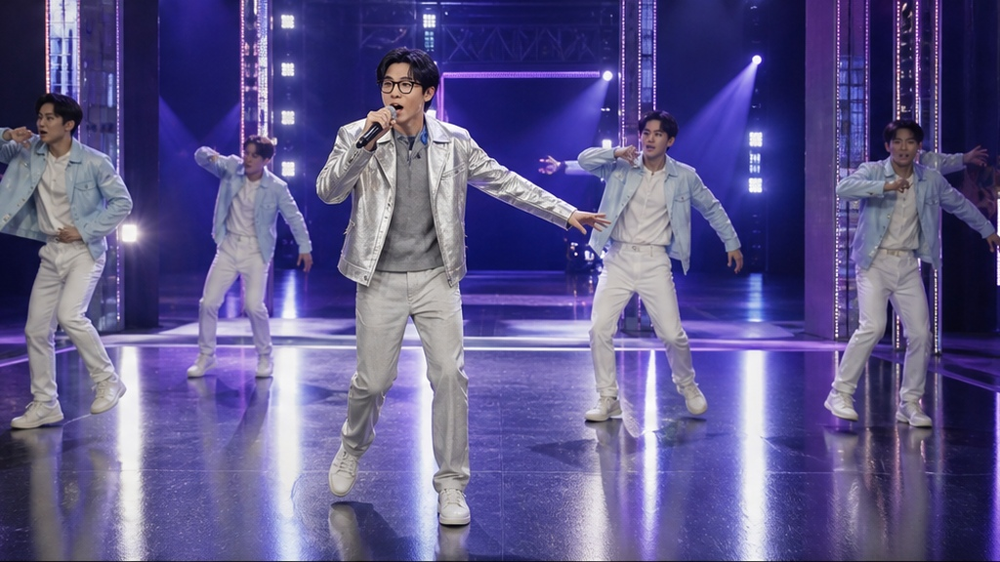
2 / 33 / 3 动作内容你跨出帘子就抬麦开唱，左手跟拍向外推；旁边队友始终在表演。你有点懵但硬接，动作不停。
对白 / 演唱黄白唱：Dream it up, let AI take flight.（26.92—30.67秒，共8拍）
如何衔接第一句延续到约30秒；不用队友说话，不停下低头研究话筒。
音乐与节奏约26.92秒踏上舞台直接抬麦唱。第一句跨8个候选节拍，延续到30.67秒；演出动作有力，表情仍有一点懵。 英文歌词逐拍：Dream / it / up / let / A / I / take / flight。
舞台前侧全身中景，保留落脚、抬麦和队友动作。
服装：银白演出外套、浅灰内搭；队友浅蓝与米白配色。
给演唱一个现场回应，并连接两条视频
1 / 22 / 2
动作内容观众随节拍抬手、欢呼；主唱第一句尾音继续。
对白 / 演唱第一句尾音延续；观众欢呼，无新对白。
如何衔接A条在这里结束，B条直接接第二句演唱；同一音乐与主唱音轨跨过30秒，不淡出。
音乐与节奏第一句还在唱，观众跟拍抬手。声音不断；此处为两条视频的接缝缓冲，不是音乐断点。
观众反打，目光朝同一舞台。
服装：观众镜头，无黄白。
接着唱，不再解释处境
1 / 1
动作内容你看向观众，左手招呼大家跟上；神情从懵逐渐变成强撑的投入。
对白 / 演唱黄白唱：A whole new world, we bring to life.（30.67—34.42秒，共8拍）
如何衔接新句起点切回人物，不在一句中间换主唱声音；时值按选定BGM调整。
音乐与节奏约30.67—34.42秒第二句再跨8拍。按同一速度、同一调性演唱，主唱需要先作曲验证，不让视频模型即兴换旋律。 英文歌词逐拍：A / whole / new / world / we / bring / to / life。
回舞台腰上中近景，右手麦和嘴型清楚，队友留在后景。
服装：银白演出外套、浅灰内搭。
让人看清确实跳了一组动作
1 / 42 / 43 / 44 / 4
动作内容右侧迈步、并步、左手斜推，接交叉步和短肩击；你在中心，队友同步，重心落地。
音乐与节奏唱完给一组完整舞步，落脚与肩击踩拍；到约36秒，音乐力度回落，动作利落收住。
正前方五人全身镜头。
服装：延续银白与浅灰，队友浅蓝／米白。
1 / 1
如何衔接这次反打回应刚完成的表演，不是随机插入一张观众脸。
音乐与节奏趁力度回落切观众回应，用欢呼接住表演，不让主角继续唱满所有空隙。
观众中景反打，沿用前面方向。
服装：观众镜头，无黄白。
完成舞台段并推高能量
1 / 32 / 3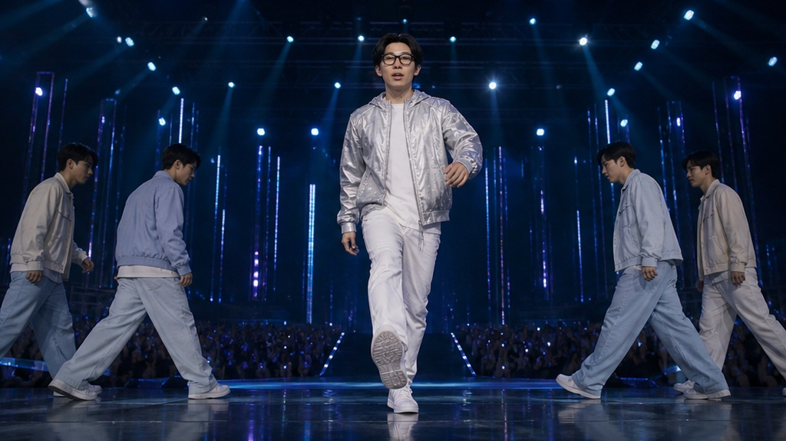
3 / 3 动作内容舞步收在你向前迈出的一步，队友向两侧让开。
音乐与节奏约38秒力度重新起来，回全身看一组更有力的舞步，推动相机运动。
回五人全身，跟随最后一组短促舞步。
服装：银白演出外套、浅灰内搭。
1 / 3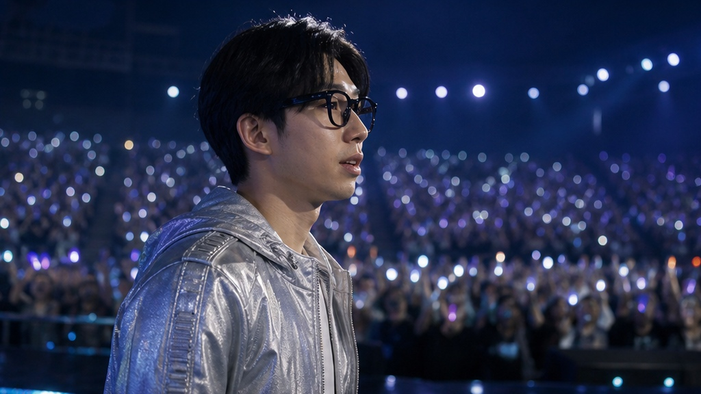
2 / 3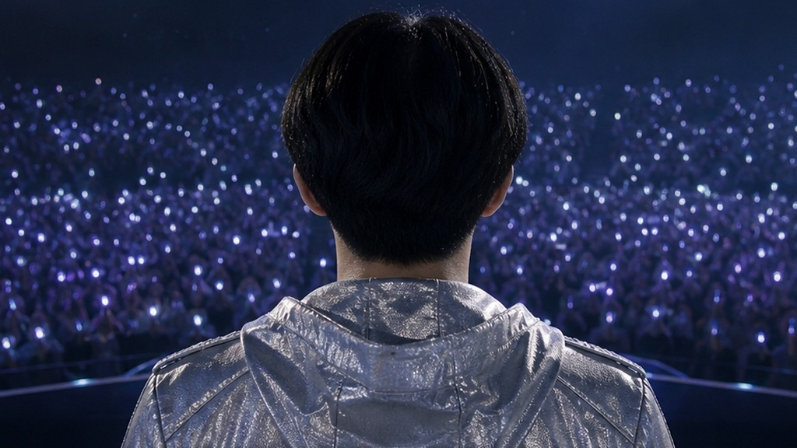
3 / 3 动作内容你一直面朝观众，不配合镜头转身体，保持向前行进的轻微躯干起伏。
如何衔接先让机位落稳，再开始世界和服装的同步切换。
音乐与节奏音乐将进入约42秒的低位；相机绕到背后并收成头肩近景，运动逐渐停稳。
相机绕人物左侧到正后方，同时靠近；终点以头部与双肩为主体，下沿约胸口上段，不露腿。
服装：银白演出外套，领口清晰可辨。
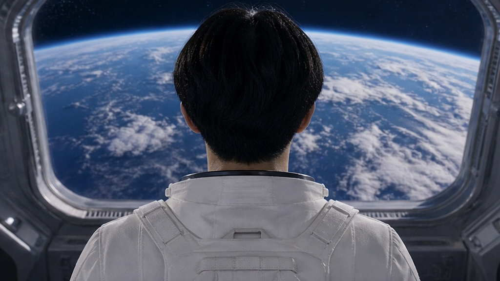
1 / 2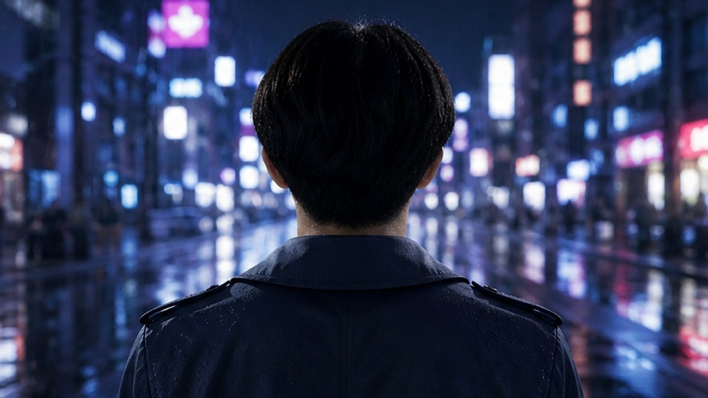
2 / 2为什么拍这一镜借音乐低位制造短暂悬空感，让随后加速更有反差。
动作内容舞台换成太空舱，银白演出服换成白色航天服；你停住半步，面对地球短暂愣一下，不转头。
如何衔接约42.88秒重新换景并恢复推进；这一停顿仍属于同一整段换景视频。
音乐与节奏顺着约42秒的实测力度回落，停留约0.94秒，也就是两拍。原曲不需要强行挖空；这是替换原49秒停顿的提案。
固定正背面头肩近景，人物头部大小与肩线承接舞台末镜。
服装：白色航天服，不戴头盔。
让同一个人穿过不同角色身份
1 / 8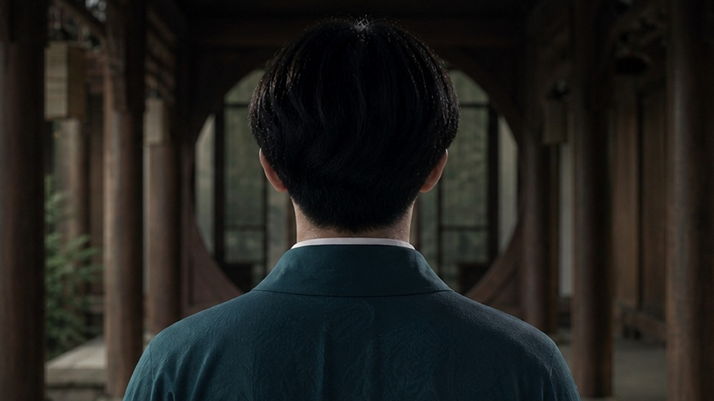
2 / 83 / 8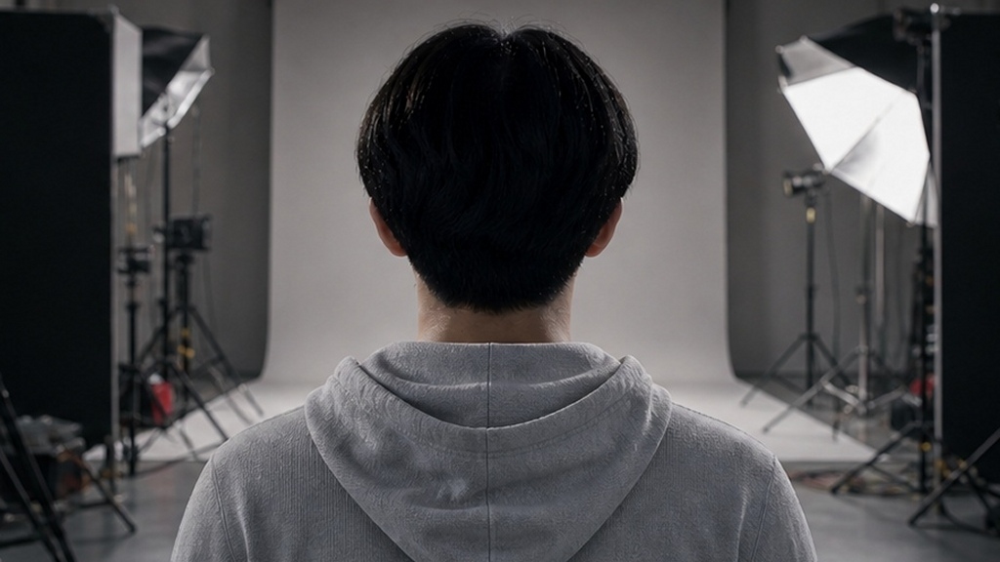
4 / 8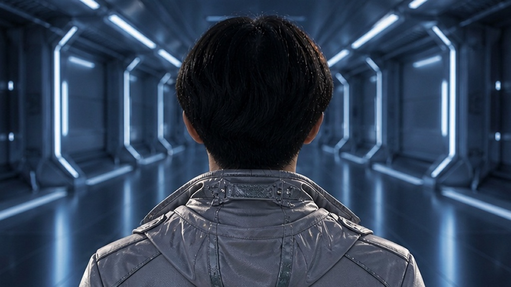
5 / 8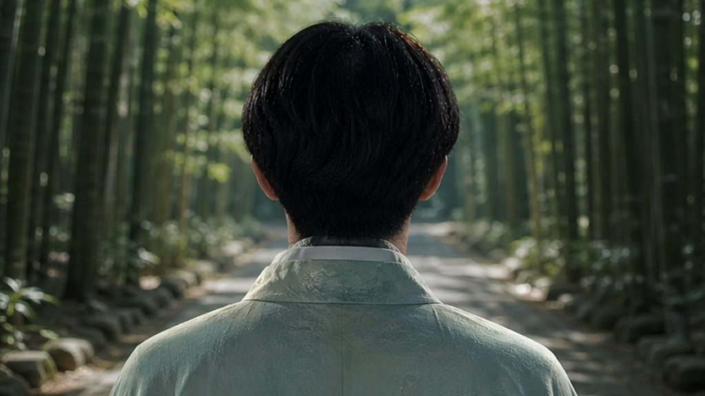
6 / 8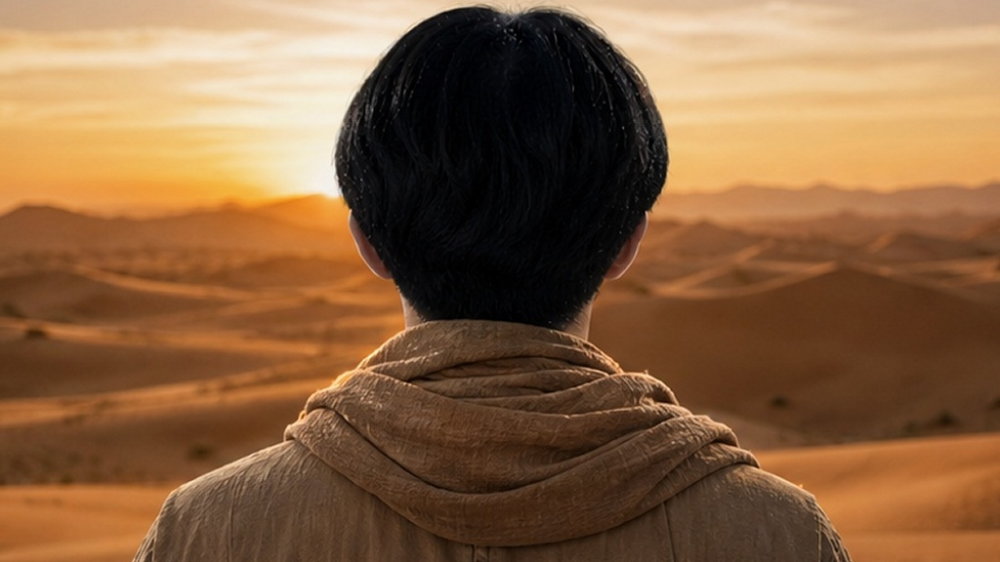
7 / 8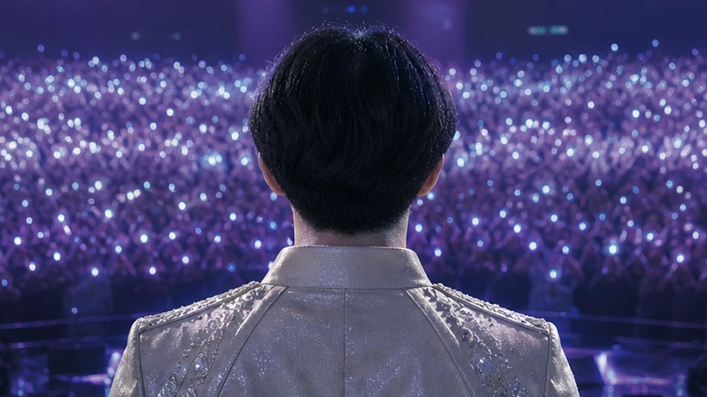
8 / 8 动作内容保持背面头肩构图与连续前行动势，环境和对应服装同步变化。太空舱停顿已移到本段前面；此后一路逐渐加密，最后回课堂，不再插入第二次长停顿。
如何衔接作为B条中的一个完整段落生成，不按每个场景提交。精确切点在已有整段素材里微调；头肩位置或动作明显跳变则整段重做。
音乐与节奏沿原曲由低位重新展开，换景从两拍一换逐渐加到四分之一拍一换；音乐没有停，就不在49秒强插长停顿。
整段固定正背面头肩近景：头部大小、中轴、肩线、相机高度不变；景深保留场景辨识度。
服装：按下方场景换装表；同一场景回访沿用同一套衣服。
让最后一次换装落到真实课堂
1 / 1
动作内容遮挡内换回实拍灰卫衣，话筒离开；肩线随着屈膝坐下下降，保持可理解的动作连续。
如何衔接不会突然从全身背影跳成正面半身；先看到坐下，再开始环绕。
音乐与节奏建议约51.30秒的最后一次换景落到课堂，配乐在此重拍之后干净收住，仅留短尾响。这是待确认的配乐剪辑方案，原曲本身此时仍在继续。
仍是背面头肩近景，暗柱短暂遮挡后接近木桌椅。
服装：你实拍中的灰色卫衣，按原素材保留款式；不加黑夹克。
把背面近景带回实拍机位
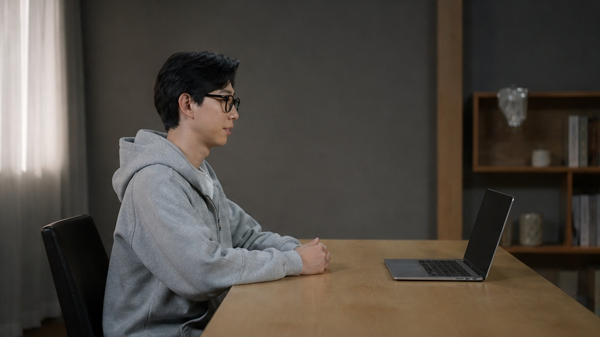
1 / 32 / 33 / 3动作内容你坐定，手放桌边；经过侧面，到正面停稳，左手准备打招呼。电脑、书架和桌沿保持真实相对位置。
如何衔接只有回课堂后才逐渐放宽构图，最终与镜像实拍对齐。
音乐与节奏音乐退场后只留原生坐下、衣物与房间声。相机绕180度，观众终于松一口气；不补诙谐音效。
相机沿左侧连续绕180度，并逐渐后退到实拍的半身构图；人物不转身。
服装：你实拍中的灰色卫衣，按原素材保留款式；不加黑夹克。
1 / 1
动作内容使用你原录音的前两句，不续加后面的课程内容。
对白 / 演唱大家好，我是黄白。
从这节课开始，我们正式进入实操。
如何衔接以原片动作和音轨为准，文字按此前转写校正。
音乐与节奏保留实拍原音，前两句完整清楚。音乐不抢课程开头。
已左右镜像的实际录影片段，约4.13秒。
服装：你实拍中的灰色卫衣，按原素材保留款式；不加黑夹克。